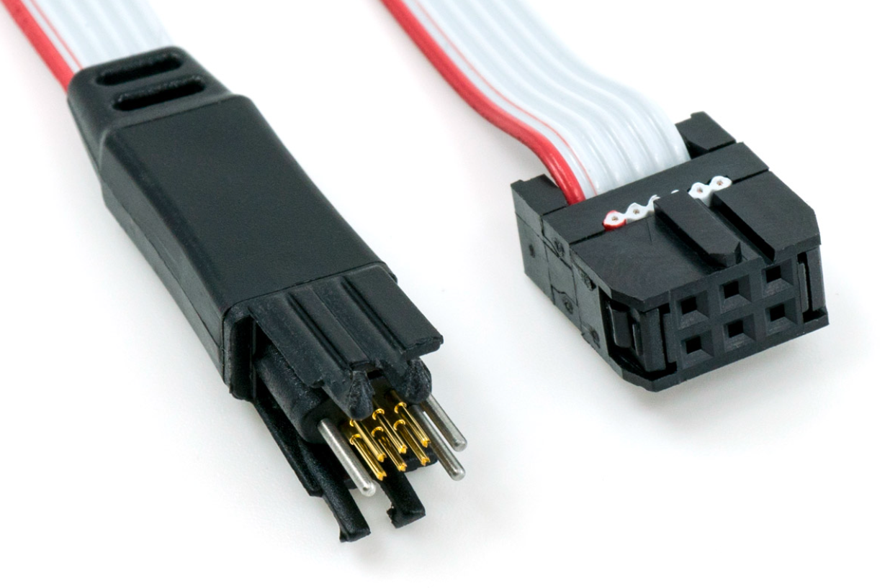
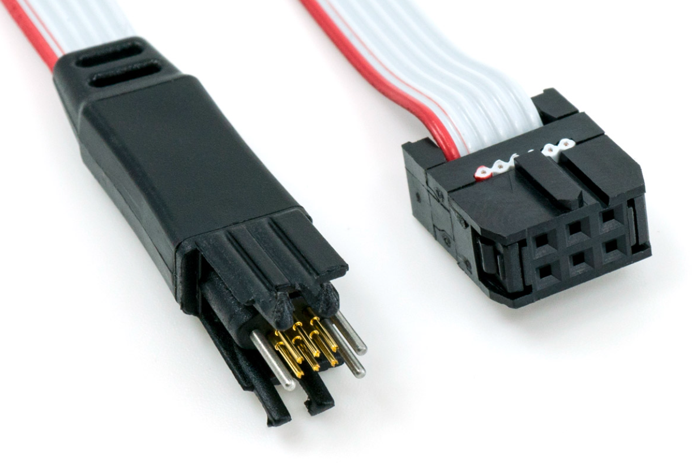

Hetkeseis 05.03.2021
rev.01
2x8 LED stringid, mõlemale stringile oma step-up toiteregulaatorid (8tk.). Toitepinge oli 17,2V
https://www.oomipood.ee/product/ps_step_up_mt3608_toitemoodul_dc_dc_step_up_2_5_24v_2_5_28v_3a
Probleemiks oli punase toitmine.
Järeldused:
Nende regulaatoritega ei saanud kasutada 19V toitepinget.
Pingeregulaatorite väljund sõltub liiga palju sisendpingest.
Vajame punase kanali jaoks step-down regulaatorit.
rev.02
Punase stringidel vahetasime regulaatorid step-downide vastu. Saime toitepinge tõsta 19V peale.
https://robolabor.ee/et/pinge-reguleerimine/1244-d-sun-3a-step-down-pinge-regulaator.html
Tegelikult oleks vaja toide tõsta 20V peale, et punase regulaator töötaks korralikult.
Toitejuhet kiiresti sisse-välja liigutades põles WROOMi 3,3V regulaator maha.
Järeldused:
Step-downi parameetrid ei olnud sobivad, sisendpinge oleks pidanud olema 20V.
Wroomi regulaatori ette on vaja kaitselülitust (Zener?)
Vajame konverterit mille väljundpinge ei oleks rangelt sõltuv toitepinge tasemest.
rev.03
Vahetasime regulaatorid välja SEPIC regulaatorite vastu. Toide 19V.
https://www.amazon.de/gp/product/B07688QN5L/ref=ppx_yo_dt_b_asin_title_o01_s00?ie=UTF8&psc=1
LEDi Toitepinge hakkas sõltuma tarbitavast voolust (SEPICu kuumenemisest). Meie vajatav vool oli selle regulaatori jaoks liiga suur. Paar toiteregulaatorit põlesid maha.
Järeldused:
Hiina konverterite kehv kvaliteet. Võibolla kasutasime koopia-koopia-koopiat?
SEPIC regulaatori kaod liiga suured (kuumenemine).
Komponentide suurus. ~3x suurem, kui step-down regulaator.
rev.04
26.03.2021 Kolime 4x4 stringi lahenduse juurde, et saaksime kasutada ainult step-down regulaatoreid.
https://www.amazon.de/gp/product/B07TTH6C3J/ref=ppx_yo_dt_b_asin_title_o04_s00?ie=UTF8&psc=1
Teeme käsitsi uue protoplaadi, vanal on rajad juba lahti tulnud. Igal stringil on jadatakisti 1-3 Ω, punasele 3-5 Ω. Regulaatoreid kulub 8tk. (2tk. värvi kohta)
Kasutame antennipesaga ESP32-WROVER-IE moodulit.
Hetkeseis 06.04.2021 rev.04
Toimib Jani Node softiga. Puudu on IMU ja SD kaardi pesa.
Toitekonverterid läksid kuumaks, jahutuseks lisasime ühe ventilaatori.
Kas peaksime sisendpinge (19V või 20V) järgi aru saama kui võimas toiteplokk on külge ühendatud (kui suur võimsus on kasutatav)? (19V voyageri 90W ning 20V võimsam Meanwelli toiteplokk)
Toitepinge
Konde 1000+220u
Aega salvestamiseks u 15ms
Led plaadi kaabel. Kui takistid LED plaadil, siis oleks vaja kokku 20 soont, kui takistid ei ole led-plaadil, siis on 8*4 + 4 =36 soont. JST PH pistik. Midagi sellist https://www.globalsources.com/Wire-harness/PH2-0-2-0mm-Pitch-Wire-Harness-1181905010p.htm#1181905010 Saaksime tellida 10, 15, 20 cm või custom pikkusega.
Näiteks 3 tk. 8-ne pistik. 1 pistik jääb temp. anduri jaoks.
LED plaadi disain. (Cree vs Seoulsemi)
CH340 katsetamine
Tahame juhtida 4px vs 1px, seega vajame rohkem juhtmeid
4*8 led string kaabel, molex picoblade 1,25mm 51021 (JST PH asemele)
Uus idee:
JST PH aga toshiba & co on koos transistoritega led plaadi peal
Temp test pulkadega radikas, HW rev 4
Kaablid:
a) plaadil ainult LED’id - 4 stringi värvi kohta, 4 värvi
Ühe värvi kohta LED+ & LED- x4, 8tk
Kokku 4px * 8 = 32 tk
Lisaks temp sensor (2-4)
DSx põhimõtte sarnane layout
SUM SUM max 36tk
Võib olla õhem kaabel, ZH, GH, picoblade
b) Toshiba & Co on LED’i plaadi peal, 8x regulaatorid taga
JST PH 2A per pin
1 pingeregulaator kahe stringi kohta, V+ & GND ühine
8 ühendatud stringi, -> 16 tk. kokku
---------
Juhtsignaalid, toitesignaalid
Toshiba & Co
5 Data + 2 toide (3V3, tuleb 5V peale) (GND)
GTL2014 1V2 (eraldi lin. reg), 1V0 pingejagur
temp sensor (2-4)
SUM SUM 25-27
c) 1:2 mix
Toitemoodulid põhiplaadil 8x, millest igaüks per 2 string
Toshiba & Co põhiplaadil koos lülitustransistoritega
Per 2x string -> 1x V+ üles ja 2x GND alla (trans lülitus per px)
8x strings = 8*1x+8*2x= 24x
temp sensor (2-4)
Jääb ära igasugune disain ühekihilisel plaadil
Ebaühtlane voolujaotus kaablis
LED plaat dum dum
SUM SUM 28 max
c2) 2px lamp
Toitemoodulite lahendus sama 8x
Tosh & co
Üles 1x V+, alla 1x GND, per 2x strings 2tx
Kokku 8x (vp & pp) 8*2x = 16
temp sensor (2-4)
SUM SUM 20 max
Läheb variant A) JST ZH 1.5 9pin, iga piksli jaoks 4x nurka, lahtine kimp on lihtsam kanalisse toppida
PH 2.0 lintkaabel oleks idees signaalile parem, väljad on vaheldatud järjekorras üksteisele lähemal
Variant C võib tekitada pikslites valguse kõikumist, ühises kius (V+) pingelang 26AWG 0.6A 40mV kui teine sisse-välja lülitab
REV V5
Jääb 2 piksliga lamp 8x regulaatoriga, LED’i plaadil ainult LED’id ja 2x JST PH-10 konnektorid
Kaabel FFC Molex 0152670787 CABLE FFC 9POS 1.00MM 12"
Pesa TE 84952-9 CONN FPC BOTTOM 9POS 1.00MM R/A
01.07.2021
Esimeseks progemiseks on testplatsid plaadil ning sellele vastav pistik: TC2030-IDC-10
USB progemismoodulina kasutame: ESP-PROG
IMU: hind ja saadavus, 1/50tk proto jaoks valmis moodulina, muidu LGA-14 jootmine käsitsi jama
Toitemoodulid: qskj https://www.qskj.cc/shop/product/1941621-mini-dc-dc-buck-step-down-module-4-24v-12v-24v-to-5v-3a-power-module-qs-1205cme-3a-79148
Kas upgrade jaoks fail SD kaardil? (DoDC ei saa ilma eraldi bootloader’ita?)
APA ledid peaks toimima kui muu driver ei ole sisse lülitatud/katki?
-----------------------------------------------------------------------
Apollo CTRL skeem, fusion360
-----------------------------------------------------------------------
REV01 BOM
11.nov. 2021
LED plaatide (5tk.) küpsetamine. Punane tester termopaariga (ukse juures) näitas 237°C. Ahju sisse peaks panema mingi õhuliigutaja, tundub, et tagapool on üle 250°C.
Kontrollisin esimest plaati, mille ahjust võtsin ning kaks punast 3mA vooluga ainult vilksatasid ning jäid 0,9V ja 3mA juurde. Iga kord kui otsad külge panin, vilksatasid ainult. umbes 100 mA juures jäid põlema.
Ühel ledil oli aga punane ok ning teisi värve 100mA-ga põlema ei saanudki.
Pildilt väga hästi ei paista, aga tundub nagu oleks mingi korrosioon keevituskoha juurest levima hakanud.
Selle rulli kott oli lahtine ning need ledid olid 70 oC juures ahjus 7päeva. .
Ühel plaadil oli LED valepidi peale saanud.
22.nov. 2021
Martin tegi Apollo skeemi korda, mõned takistid muudetud, DoDC eemaldatud, 5V ja 12V Enable rada läbi lõigatud.
Apollo Maxi CTRL 1010819401
Väliseks suhtlemiseks on lintkaabli pistik (IDC), mille pinout sobib RPI klemmriba algusega kokku (pistiku saab otse RPI klemmribale ühendada)
ESP pistiku vaade aukude poolt on siis peegelpilt RPI pistikust:
Kaks kahest:5V - pin 2
GND - pin 6
Apollo pool on lintkaabel ühendatud otse ESP-32 jalgade külge:
PILT vajalik
Erinevate auto sigaretisüütajast toite saavate laptopi toiteplokkide testimine.
Pinge valik käib arvuti toitepistiku vahetamisega. Erineva toitepingeid on:
18,5 V -> 15,32 kΩ
19 V -> 13,63 kΩ
19,5 V -> 11,94 kΩ
20 V -> 10,92 kΩ
SD kaardi pin MISO
IO12 -> IO2
mugavam SW, kaob JTAG funktsionaalsus mälukaardi pesast
T-962 Ahi.
Ostsime ECO-WORTHY T962 ahju Amazonist https://www.amazon.de/-/en/ECO-WORTHY-Infrared-Windowed-180%C3%97235MM-800Watt/dp/B017BARMQG/ref=sr_1_1?crid=UXX7QFF7J775&keywords=T-962&qid=1640601123&sprefix=t-962%2Caps%2C118&sr=8-1
Eemaldasin maalriteibi, jätsin korpuse natuke lahti, et juhtmed alumiiniumfooliumi vastu ei puutuks. Kontrolleri ventilaator lärmab.
Esimest korda jooteprofiile proovides, saime Kaspariga otse trükkplaadile joodetud termopaari temperatuuriks üle 300°C, kuigi temperatuurigraafik lubas max. temperatuuriks 250°C.
Eemaldasin ahju ühe termopaari torust ning jootsin trükkplaadi jupile. Nüüd on võimalik temperatuuri graafikut palju paremini järgida. Lisasin paremale ka välise temp anduri plaadi (UT-71 tester).
Kuna arvatavasti kasutatakse nende temp. andurite keskmist, siis 250°C ei tule muidu välja, kui graafik pole väga lauge või temp. pole määratud graafikul 265°C.
Komponendid saavad vist natuke palju kuuma ka praegu, flux tina peal omandab kollaka tooni, aga madalamaks ei saa ka keerata, kuna nurgas kipub läikiva pinnaga SD kaardi pesa mõni jalg jääma sulamata, nagu alloleval pildil:
Hetkel sain kontrollerite jootmisel parima tulemuse Wave7 ning pannes plaadi täpselt pildil olevale kohale.
Tellisime ka uue kontrolleri ahjule: https://www.estechnical.co.uk/t962a-reflow-oven-controller-complete-upgrade-package
Pärast raha kättesaamist andsid nad teada:
From: Victoria Simmons <vic@estechnical.co.uk>
Date: Tue, Dec 21, 2021 at 4:38 PM
Subject: ESTechnical Order - payment received
To: Kaarel Korsen <Kaarel@digitalsputnik.com>
We are currently waiting for a part which we had hoped would be here by now so that we could finish manufacturing new ESTechnical Controllers. As soon as it arrives we will finished the ESTechnical Controllers and dispatch your order.
LEDide kuivatamine vana ahjuga
Panin LEDid kuivama ning 63°C juures nädal aega kuivatades tõmbusid lindijupid krussi ning painutasid ledide jalgu.
Kaire painutas jalad tagasi sirgeks. Kokkutõmbuva plastiku jõud on päris suur - jalgade kokkupainutamine murdis mõnel ledil ka tükikese korpust nurgast ära.
Tõstsin temp.anduri lae lähedale taha nurka ning temp. oli 71°C.
Järgmisel hommikul oli temperatuur juba 83°C. Tundub, et põhjuseks oli fooliumist lehter, mis jõulude ajal oli vent.toru otsast lahti tulnud ning ahju peale vajunud. Varem oli järelikult ahju ümbruse pidev õhuliikumine ahju jahutanud.
APOLLODE NIMEKIRI
Apollo00006
5V on 3A regulaatoriga.
SD kaardi pin MISO IO12 -> IO2 juhe joodetud.
APA riba prinditud alusega, aga natuke nihkes serva taga. Hajutiks Rosco E400 ja peal 0,9 ND filter
Punase vilkumise probleem. Martin lisas kondeka ainult punase kanali transistorile.
Lõikasin läätseraami lahti, vahetasime kõik lintkaablid välja, et olla kindel, et punase viga poleks lintkaablis. Vana lintkaabel oli natuke räsitud välimusega.
Apollo00005 led22
5V on 3A regulaatoriga.
SD kaardi pin MISO IO12 -> IO2 juhe joodetud.
Kondekad lisatud kõikide kanalite transistoritele
Muutsin kõik ledid hiljem 625mA peale.
Kui oli R 625mA, G 1000mA, B 625mA, W 1000mA siis toitefilter põles maha. Kaspar mõõtis sel hetkel lambi võimsuseks 190W ja 43400 luxi seconicu toruga. Vent oli 25% peal. Pärast remonti kõik muu toimib, välja arvatud power nupu sisend.
Power nupu pistiku GND oli külmjootega.
Apollo00013 led11
5V on 3A regulaatoriga.
SD kaardi pin MISO IO12 -> IO2 juhe joodetud.
Kondekad lisatud kõikide kanalite transistoritele
R 625mA, G 625mA, B 625mA, W 625mA
Apollo00010
5V on 3A regulaatoriga.
SD kaardi pin MISO IO12 -> IO2 juhe joodetud.
Temperatuuriandurist loeb välja 0°C, parandatud
Fiks takistid
130||130|560
130
240||270
130||4700
Martin muutis takisteid, nüüd loeb temp andur kogu aeg 220
Apollo00040 (segaduse tõttu sai nr4 omale 40) led9
5V on 3A regulaatoriga.
SD kaardi pin MISO IO12 -> IO2 juhe joodetud.
On vaja maha joota FAN tacho ahelast R12
Käis Ameerikas, tagasi tulles olid toitepesa ning antenni mutrid lahti loksunud. Kas tugevamalt kinni keeramine aitab lennukisõitu üle elada?
APA riba oli ka lahti tulnud (See oli valge karbikutükiga lahendus)
Vaja APA hoidik vahetada prinditud aluse ja musta kilega variandi vastu.
Ühe nurga punased ei põle enam.
Apollo00004 (sees on kontroller numbriga 1, radiaator ei ole klaaskuulitatud)
R 625mA, G 625mA, B 625mA, W 625mA
Potega reguleeritud, mõõdetud pinged:
R 12.426 12.013
G 15.023 14.903
B 15.030 14.292
W 14.555 14.579
Apollo00014
5V on 3A regulaatoriga.
SD kaardi pin MISO IO12 -> IO2 juhe joodetud.
Martin leidis 3,3V regulaatori jootevea, mistõttu on vaja maha joota ESP32.
Apollo00015 led23
5V on 3A regulaatoriga.
SD kaardi pin MISO IO12 -> IO2 juhe joodetud.
Kondekad lisatud kõikide kanalite transistoritele
R 625mA, G 625mA, B 625mA, W 625mA
Kukkus maha ~0,9m kõrguselt. Külgejäänud torud painutasid klaasi hoidvat raami ning silikoon rebenes natuke. Kaks nurkade peal olevat läätsehoidjat läksid katki.
Apollo00011 led17
5V on 3A regulaatoriga.
SD kaardi pin MISO IO12 -> IO2 juhe joodetud.
Kondekad lisatud kõikide kanalite transistoritele
R 625mA, G 625mA, B 625mA, W 625mA
Alates x0016
Q1-4 DS paralleelis 10nF
Ventilaatori juhet enam lühemaks ei lõika, ülejäägi kerime ventilaatori ümber. Ventilaatori juhe tuleb trükkplaadile korpuse vahelt pistiku lähedalt.
Trükkplaadile joodame 3-pin kontaktid. Ventilaatori juhtme 4-s pin jääb õhku rippuma.
Lintkaablite lagunemine painutamisel. Würthi viimase ostu lintkaablid olid väga pikka aega (toodetud 2011) laos seisnud ning tõenäoliselt olid ka teised ostjad hädas olnud väga õhukese metallikihiga, mis kippus murduma. Kontrolleri J4 ja J2 juures peab lintkaablit igal juhul painutama, muidu ei mahu regulaatori moodulist mööda.
Selleks, et sinist osa ei peaks painutama on vaja lõigata juhe 2,6mm lühemaks ning J4 sissepistmise ajaks eemaldada pesa pruun lukusti. Kui juhe juba pesas on, saab lintkaabli pehmet osa painutada radiaatori alla suurema raadiusega.
11.01.2022 Temperatuuri mõõtmise probleem.
Paaril Apollol on temperatuuri lugemisega raskusi. (Temp on 0 või 220). Kontrolleril 12 lõppes temp lugemine pärast ledide süttimist. Kui ledid kustusid, oli temp jälle loetav. Plaadil 10 oli temp. Kogu aeg 0.
Pilt LM75 temp. Anduri väljundis:
Häirete vähendamiseks tuleks led plaadil temp anduri juures olevale 100nF kondele juurde joota 22uF konde. (Led plaat 10)
Pilt pärast kondensaatori lisamist:
Praegu juba kokku pandud Apollode juures on tavaliseks veaks suvalise lugemi saamine iga paari-kolme minuti järel. Võimalik, et see on ka temperatuuri anduri toite häiretega seotud.
Apollo0006 seest avastasin kollase plaadi, mille suhtlemine Thonnyga oli kuidagi vildakas:
����ets Jul 29 2019 12:21:46
rst:0x1 (POWERON_RESET),boot:0x1b (SPI_FAST_FLASH_BOOT)
configse�e�e�e�e�etete�e�e�e�e�e�eeeeeee�e�e�e�e�e�e�e�e�e�e|e|e|etsets�ets�ets�etse|e�e�e�eeeeeee�e�e�e�e�e�e�e�e�e�etsetset�e�����Calibration for 1500K generated
Kaspar mainis, et ka temal on olnud sellise kollase usb mooduliga probleeme. Punane täpp peal ning ootab edasist uurimist.
Kaspar avastas osadel Apollodel rohelised rõngad.
Võimalik, et see on seotud teise probleemiga: läätsede pealepanemisel avastasin ühe läätse, mis istus teistest oluliselt kõrgemal. Põhjuseks oli ultraheli pesuvannist külge jäänud tükike. Kontrollisin kõik veel ladumata läätsed üle ning avastasin veel selliseid:
Lisaks hakkas mõnede läätsede UV liim peale pealekandmist kohe paksenema. Võimalik, et see tekib halvasti pestud läätsehoidjatega. Läätsed jäävad kleepuvaks peale pesu. (ultraheli pesumasina IPA on väga vana, kogu masin vajab korralikku puhastamist ning uut IPA-t). Selle probleemi vältimiseks küpsetan läätsehoidjaid 5min jalad ülespidi UV lambi all enne liimi määrimist.
Läätsehoidjate pesemisel peab läätsed laduma jalad ülespoole, et jalgade külge ei kleepuks mingeid pesemise jääke.
Espressif uued MPN
ESP32-WROVER-IE(M213EH3264UH3Q0) ESP32-WROVER-IE-N4R8 ESP32-WROVER-IE(M213EH6464UH3Q0) ESP32-WROVER-IE-N8R8 ESP32-WROVER-IE(M213EH2864UH3Q0) ESP32-WROVER-IE-N16R8
MP2315 pingeregulaatorite fiks. takistid
Kus R2 hiina moodulitel on 7k32 (84B)
Vout = 0.8*(R1+R2))/R2
R1 = ((Vout/0.8)-1)
R 105 kΩ 93.1k
G 130 kΩ
B 127 kΩ
W 130 kΩ
MP2315 fix resistors arvutustabel
APOLLO P2
93.1 |
133 |
130 |
127 |
Pinged mõõdetud plaatidel vt järgmine ASSY pilt
Värvide intensiivsus min-max -> B R W G
Potensiomeetri keeratav vedruklemm on lihtsalt eemaldatav kollaste lõiketangidega kangutades ning keraamiline osa tuleb hästi ära suure jootekolviga ning suure tinapalliga. Lisa takisti(d) siia:
20.01.2022
Potede fikseerimiseks kasutasin kuuma liimi ning silikooni. Kuum liim ei sobinud, kuna püstolist tuleb korraga liiga suur tilk. Hambaorgiga doseerides on kogus paras aga liim jahtub liiga kiiresti maha ning liiminiitide eemaldamine on vaevarikas.
Hambaorgiga:
Silikoon kuivab küll terve öö, aga doseerimine ja tulemus on tunduvalt paremad:
Proovisime toitemoodulite poted vahetada takistite vastu, aga ledide voolud ei sobinud. Martin soovis statistikat potedega keeratud toitemoodulite pingetest, et arvutada välja uued takistite komplektid. Allpool on igale kontrolleri-ledi komplektile lisatud ka mõõdetud pinged.
Apollo00030 led10
5V on 3A regulaatoriga.
SD kaardi pin MISO IO12 -> IO2 juhe joodetud.
Kondekad lisatud kõikide kanalite transistoritele
R 625mA, G 625mA, B 625mA, W 625mA
Potega reguleeritud, mõõdetud pinged:
r 10.884 10.952
g 14.608 15.072
b 14.418 11.930 14.634
w 14.605 14.314
Pärast kokkupanemist on sinise üks pool nõrgem. Tegelikult on probleem pinge reguleerimisest, mõõdetud pingetest on näha, et juba reguleerimise ajal sai üks sinise pool teisest madalama pinge.
Apollo00020 led18
5V on 3A regulaatoriga.
SD kaardi pin MISO IO12 -> IO2 juhe joodetud.
Kondekad lisatud kõikide kanalite transistoritele
R 625mA, G 625mA, B 625mA, W 625mA
Potega reguleeritud, mõõdetud pinged:
r 10.566 10.406
g 14.877 14.983
b 14.604 14.484
w 14.462 14.569
Apollo00012 led15
5V on 3A regulaatoriga.
SD kaardi pin MISO IO12 -> IO2 juhe joodetud.
Kondekad lisatud kõikide kanalite transistoritele
R 625mA, G 625mA, B 625mA, W 625mA
Potega reguleeritud, mõõdetud pinged:
r 10.598 10.541
g 14.682 14.545
b 14.638 14.508
w 14.538 14.387
Apollo00029 led24
5V on 3A regulaatoriga.
SD kaardi pin MISO IO12 -> IO2 juhe joodetud.
Kondekad lisatud kõikide kanalite transistoritele
R 625mA, G 625mA, B 625mA, W 625mA
Potega reguleeritud, mõõdetud pinged:
r 10.606 10.746
g 14.875 15.160
b 14.570 14.641
w 14.584 14.574
Apollo00028 led5
5V on 3A regulaatoriga.
SD kaardi pin MISO IO12 -> IO2 juhe joodetud.
Kondekad lisatud kõikide kanalite transistoritele
R 625mA, G 625mA, B 625mA, W 625mA
Potega reguleeritud, mõõdetud pinged:
r 10.578 10.772
g 14.882 15.125
b 14.796 14.647
w 14.441 14.428
Apollo00016
5V on 3A regulaatoriga.
SD kaardi pin MISO IO12 -> IO2 juhe joodetud.
Kondekad lisatud kõikide kanalite transistoritele
Firmware peale panemisel oli kuidagi aeglasem kui teised.
Softi ülestulek on tundus ka kuidagi aeglasem.
Apollo00036 led19
5V on 3A regulaatoriga.
SD kaardi pin MISO IO12 -> IO2 juhe joodetud.
Kondekad lisatud kõikide kanalite transistoritele
R 625mA, G 625mA, B 625mA, W 625mA
Potega reguleeritud, mõõdetud pinged:
R 11.059 10.966
G 14.695 14.799
B 14.710 14.710
W 14.702 14.633
Apollo0019 led8
5V on 3A regulaatoriga.
SD kaardi pin MISO IO12 -> IO2 juhe joodetud.
Kondekad lisatud kõikide kanalite transistoritele
R 625mA, G 625mA, B 625mA, W 625mA
Potega reguleeritud, mõõdetud pinged:
R 10.644 10.623
G 14.693 14.676
B 14.729 14.740
W 14.718 14.682
Apollo0031 led12
5V on 3A regulaatoriga.
SD kaardi pin MISO IO12 -> IO2 juhe joodetud.
Kondekad lisatud kõikide kanalite transistoritele
R 625mA, G 625mA, B 625mA, W 625mA
Potega reguleeritud, mõõdetud pinged:
R 10.753 10.950
G 14.610 14.952
B 14.681 14.622
W 14.697 14.639
Apollo0022 led16
5V on 3A regulaatoriga.
SD kaardi pin MISO IO12 -> IO2 juhe joodetud.
Kondekad lisatud kõikide kanalite transistoritele
R 625mA, G 625mA, B 625mA, W 625mA
Potega reguleeritud, mõõdetud pinged:
R 10.711 10.771
G 14.776 14.654
B 14.561 14.623
W 14.538 14.582
01.02.2020 pärast Lediplaatide küpsetamist oli põhiliseks probleemiks lahtised jalad. Lisaks said ära parandatud ka Martini kontrollitud plaadid (põlesid maha täisvooluga???)
Omapärane oli see, et kõik vahetatud ledid olid pesa kõrval vasakul.
1823
Led20 oli vigane W
Led7 oli vigane G
Led21 oli vigane G
Led13 olid vigased 2xB, lisaks vahetasin välja 220 probleemi tõttu ka temp.anduri.
Led33 vahetasin välja 220 probleemi tõttu temp.anduri.
Led26 jootsin 220 probleemi tõttu temp.anduri kolviga üle.
Apollo00018 led27
ESP32 kärssas suitsu ja raginaga maha. 3,3V regulaatoril oli proovitud joota tinapallikest, aga flux oli selle ära tõmmanud. Mooduli pealejootmisel on ka probleeme olnud: moodul irvakil ja tina sees külmjoote märgid.
Pärast remonti:
R 625mA, G 625mA, B 625mA, W 625mA
Potega reguleeritud, mõõdetud pinged:
R 10.776 10.756
G 14.835 14.780
B 14.922 14.672
W 14.592 14.569
Apollo0021
Ei lähe käima. Tõenäoliselt on põhjuseks 5V regulaatori lühis.
14.02.2022 Vigased remondiriiulil
A31.12 paar auku vajavad hõõritsemist
A12.led15 temp220 probleem
A20.led18 temp220 probleem
A30.led10 OK
A28.led5 väljas on silt 15, wifi on 12
17.02.2022 Temperatuurianduri probleem.
LED plaatidel olime lisanud juba toitekondensaatori (LINK konde probleemile)
Nüüd aga hakkas vigaseid komplekte järjest juurde tulema. Avastasime, et ESP32 I²C clock ja data pinnid (GPIO22 ja GPIO23) on viga saanud, enamusel ülemine õlg, aga ühel ka alumine õlg. Vahetasin ESP32 välja kontrolleritel:
Apollo10 Data ok, clock 3V pidevalt
Apollo21 Data max 1,8V, clock ok
Apollo24 Data low pidevalt, clock 3V pidevalt
Apollo 20
Apollo 12
Apollo 22
Komplekt Apollo26 led 7 andis ka temperatuuriviga, kuigi kontrolleri GPIO22 ja GPIO23 üle mõõtes selgus, et need on korras. Mõõtes aga LM75 temperatuuriandurit, oli toite otste vahel 2,4 kΩ ning SDA 3,9kΩ SCK 0,9kΩ. Seetõttu said üle mõõdetud kõik juba valmis lediplaadid, mis ootasid kokkupanemist. Leidsin nende seast:
Led7
Led15
led20
Heaks tulemuseks loeme GND(4) ja VCC(8) ning SDA(1) SCL(2) vahe 5-10 MΩ.
Apollo0030 led25
R 625mA, G 625mA, B 625mA, W 625mA
Potega reguleeritud, mõõdetud pinged:
R 11.020 11.012
G 14.842 14.815
B 14.802 14.930
W 14.596 14.740
Apollo0021 (oli enne remonti 20) led18
R 625mA, G 625mA, B 625mA, W 625mA
Potega reguleeritud, mõõdetud pinged:
R 10.688 10.432
G 14.972 15.036
B 14.774 14.626
W 14.644 14.640
Apollo0022 led16
R 625mA, G 625mA, B 625mA, W 625mA
Potega reguleeritud, mõõdetud pinged:
R 10.711 10.012
G 14.842 14.815
B 14.802 14.930
W 14.596 14.740
Apollo0017 led34
R 625mA, G 625mA, B 625mA, W 625mA
Potega reguleeritud, mõõdetud pinged:
R 11.065 10.836
G 14.704 14.799
B 14.719 14.964
W 14.857 14.635
02.03.2022 läksid Ameerikasse välja:
Apollo0016 led16
R 625mA, G 625mA, B 625mA, W 625mA
Potega reguleeritud, mõõdetud pinged:
R 10.758 10.718
G 14.700 14.783
B 14.606 14.608
W 14.564 14.533
Apollo0024 led28
R 625mA, G 625mA, B 625mA, W 625mA
Potega reguleeritud, mõõdetud pinged:
R 10.638 10.735
G 15.234 15.055
B 14.921 14.946
W 14.913 14.468
Apollo0012 led31 (enne remonti oli led15)
R 625mA, G 625mA, B 625mA, W 625mA
Potega reguleeritud, mõõdetud pinged:
R 10.841 10.855
G 14.751 14.716
B 14.750 14.667
W 14.532 14.428
Apollo0027 led35
R 625mA, G 625mA, B 625mA, W 625mA
Potega reguleeritud, mõõdetud pinged:
R 10.496 10.548
G 14.900 15.030
B 14.867 14.855
W 14.449 14.457
Akuplaatides kasutame toiteregulaatori juures lisaahelat, et aku ei läheks kaitsesse sisselülitamisel:
Akumoodul on auto sigaretisüütaja regulaator laptopile
Relee: [6001301200] Relay gen purpose SPST, 16A, 12VDC, 360Ohm, TH
MPN: RT33L012
NTC: [7201910000] Thermistor NTC, 10ohm, 5A, D16mm, Rm7.5mm, 20%
MPN: B57238S0100M000
120Ohm takistid relee mähisele
Diood relee mähisele
0,2mm soojustjuhtiv kahepoolne teip mooduli ja alumiiniumplaadi vahele
Väljundi pinge määramiseks on vaja R26 (20K) peale joota paralleelselt 619 kohm takisti.
Aku V-mount adapterina kasutame Amazonist ostetud nelja poldiauguga akuplaate.
02.03.2022 ootavad remontimist:
Apollo28 led5 ESP Rx pin ei suhtle
A26 Üks toitemoodul vigane
A32 valge kanal ei toimi
A22 Ei flashi firmware, järsku hakkas flashima, aga nüüd vilistab 50% PWM.
A23 APA käitub imelikult. APA kogu aeg punane, kui slave modes. Masterina OK, tundub, et wifi slave segab, kui signaal nõrk. Pritsib välja:
Firmware ja softi ülekirjutamine parandas olukorra.
A14 ESP temp sisendid omavahel lühises
A10 ootab ESP vahetust
A20 Temp. error
A27 led18 ei põle 4 ledi sinine
04.03.2022 vahetasin ära ESP-d: A28, A32, A20, A17, A14, A10
10.03.2022
Uued kontrollerid 41,42,43,44,45,46
Uued ledid 41,42,43,44 3LWD
Apollo0042 led26
R 625mA, G 625mA, B 625mA, W 625mA
Potega reguleeritud, mõõdetud pinged:
R 10.742 10.829
G 14.927 14.917
B 14.880 14.826
W 14.533 14.634
Apollo0041 led25
R 625mA, G 625mA, B 625mA, W 625mA
Potega reguleeritud, mõõdetud pinged:
R 10.810 10.862
G 15.076 15.093
B 14.758 14.766
W 14.956 14.635
Apollo0046 led29
R 625mA, G 625mA, B 625mA, W 625mA
Potega reguleeritud, mõõdetud pinged:
R 10.945 10.747
G 14.913 15.030
B 14.664 15.139
W 14.747 14.888
10.03.2022 Remonditud kontrollerid said endale led plaadid:
Apollo0017 led13 ESP vahetatud
R 625mA, G 625mA, B 625mA, W 625mA
Potega reguleeritud, mõõdetud pinged:
R 10.972 10.876
G 14.897 14.846
B 14.729 14.586
W 14.883 14.636
Apollo0028 led5 ESP vahetatud
R 625mA, G 625mA, B 625mA, W 625mA
Potega reguleeritud, mõõdetud pinged:
R 10.746 11.012
G 15.065 15.275
B 14.674 14.763
W 14.492 14.536
Apollo0018 led34
R 625mA, G 625mA, B 625mA, W 625mA
Potega reguleeritud, mõõdetud pinged:
R 10.858 10.436
G 14.588 14.635
B 14.509 14.662
W 14.660 14.436
Apollo0032 led21 ESP vahetatud
R 625mA, G 625mA, B 625mA, W 625mA
Potega reguleeritud, mõõdetud pinged:
R 11.238 11.179
G 14.780 14.960
B 14.741 14.674
W 14.618 14.440
Apollo0010 led27 See on esimene Martini poolt joodetud takistitega kontroller. ESP vahetatud, APA pesa mahajootmisest tingitud radade vigastus parandatud traatidega. Transistoridele kondekad lisatud
R 625mA, G 625mA, B 625mA, W 625mA
Potega reguleeritud, mõõdetud pinged:
R 10.313 10.328
G 14.824 14.929
B 14.488 14.351
W 14.400 14.408
Apollo0014 led33 ESP vahetatud, blue regulaator vahetatud ning mahajootmisest tingitud radade vigastus parandatud traatidega. Transistoridele kondekad lisatud
R 625mA, G 625mA, B 625mA, W 625mA
Potega reguleeritud, mõõdetud pinged:
R 10.975 10.951
G 15.092 14.955
B 15.199 14.901
W 14.835 14.915
Kasparile läksid koju kalibreerimisse 10,18,17,46,28
18.03.2022
A44 ventilaator hakkas burn-inis urisema (millegi vastu käima). Midagi on ventilaatori sees lahti, ühel hetkel ei saanud labasid üldse liigutada.
Kasparile läksid koju kalibreerimisse 14,32
Apollo0043 led44
R 625mA, G 625mA, B 625mA, W 625mA
Potega reguleeritud, mõõdetud pinged:
R 11.044 11.007
G 14.951 14.927
B 14.652 14.725
W 14.675 14.645
Apollo0044 led46 ventilaator hakkas burn-inis urisema (millegi vastu käima). Midagi on ventilaatori sees lahti, ühel hetkel ei saanud labasid üldse liigutada.
R 625mA, G 625mA, B 625mA, W 625mA
Potega reguleeritud, mõõdetud pinged:
R 10.667 10.618
G 14.707 14.952
B 14.889 14.632
W 14.741 14.675
Apollo0023 led45
R 625mA, G 625mA, B 625mA, W 625mA
Potega reguleeritud, mõõdetud pinged:
R 11.047 11.016
G 14.996 15.020
B 14.611 14.675
W 14.665 14.684
Apollo0020 led42
R 625mA, G 625mA, B 625mA, W 625mA
Potega reguleeritud, mõõdetud pinged:
R 10.808 10.840
G 14.911 14.989
B 14.798 14.985
W 14.729 14.717
Apollo0026 led43
R 625mA, G 625mA, B 625mA, W 625mA
Potega reguleeritud, mõõdetud pinged:
R 10.441 10.594
G 14.357 14.817
B 13.863 14.166
W 14.544 14.741
Apollo0016 led41
R 625mA, G 625mA, B 625mA, W 625mA
Potega reguleeritud, mõõdetud pinged:
R 10.842 10.925
G 14.949 14.913
B 14.931 14.746
W 14.865 14.613
Apollo0045 led47
R 625mA, G 625mA, B 625mA, W 625mA
Potega reguleeritud, mõõdetud pinged:
R 10.883 11.004
G 14.105 14.095
B 14.227 14.170
W 13.994 13.970
22.03.2022 Läksid BFM-i 03,04,30,36
13.04.2022 läksid remonti A44 ja A45 (ESP vahetus)
A P O L L O P 2
Toitemoodulitele pinge reguleerimiseks takistite jootmine. 21.04.2022
2A moodulid (PO0517 ship date: 08 oct 21)
R 93.1 kΩ
G 130 kΩ
B 127 kΩ
W 130 kΩ
12.14V 105 kΩ (kuna see on ainult ventilaatori jaoks, siis kasutaks mingeid suvalisi regulaatoreid)
3.3V 23,2 kΩ
5V 39 kΩ (tegelikult soovime kasutada 3A regulaatoreid 5 V jaoks)
MP2315 fix takistid varieeruvus
Apollo P2 pingeregulaatorite paigutus
Apollo P2 parandused
1. Takisti R21 eemaldada, R22 asendada 120k 0805
Põhjus, UVLO, OVLO vahemikus 9-12V, P1 puhul 16-23V
Varem jadas 47k +120k
P2 oli kuidagi sattunud 47k+47k||47k
P1 skeem võrdluseks
R87 & R88
P2
R21 & R22
2. Ventika 12V pinge ühendada ventika pesaga pin 2
Põhjus: eagle
3. P2 lambid vilksatavad sisselülitamisel
Puudu MP2315 mooduleid komp. pd takisti, seniks kuni ESP aktiivselt liinile tuleb
C18 peale joota 0805 1k takisti
Lambi väljalülitamisel kustub ära ka SK6812 riba, 5V toiteregulaatori EN võetakse maha poweri nupu vajutamisel.
Sama probleem on ka ventilaatori 12V toitega: liiga kõrge temperatuuriga EN võetakse maha, et lede kustutada, aga ventilaator jääb ka seisma.
4. 5V & 12V regulaatorite enable signaali eraldamine
Lõikame läbi raja, et oleks alati pinged olemas, 5V led riba jaoks ja 12V ventilaatorile.
5. Linkaablis puudu +5V & GND
Pilt olemas P2 tootmisjuhendis
SK6812 riba võiks olla pikal pehmel trükkplaadil koos pistikuga, siis ei peaks juhet jootma.